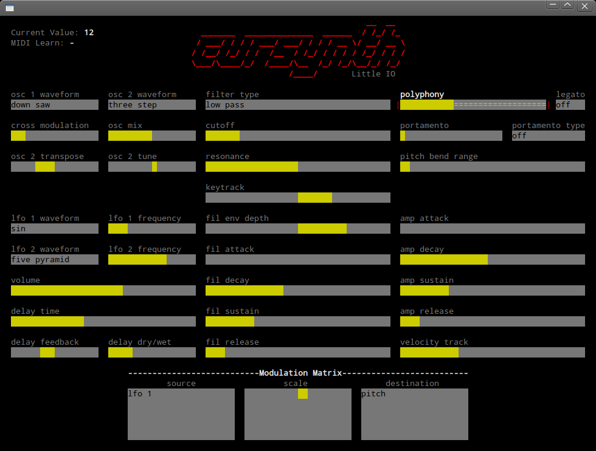

Cursynth
a musical GNU program
Cursynth is a polyphonic music synthesizer that runs graphically inside your terminal. It runs as a standalone soft-synth that you can play with your computer and MIDI keyboard.

Feature Overview
- 2 oscillators with 15 anti-aliased waveforms
- 32 voice polyphony
- Low-pass / high-pass resonant filter
- Patch browsing/saving
- MIDI learn
- Routable modulation matrix
- Lots more!
How's it work?
User Comments
- "oooohhh, ASCII!"
- "Cursynth because it uses the curses library. I get it.."
- "Why would anyone want that?"